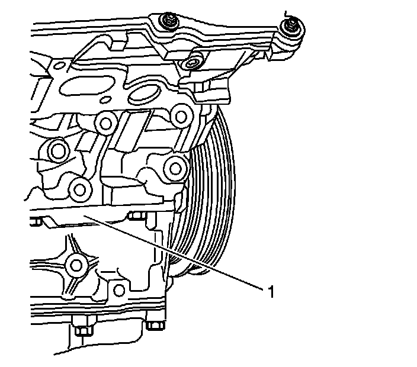
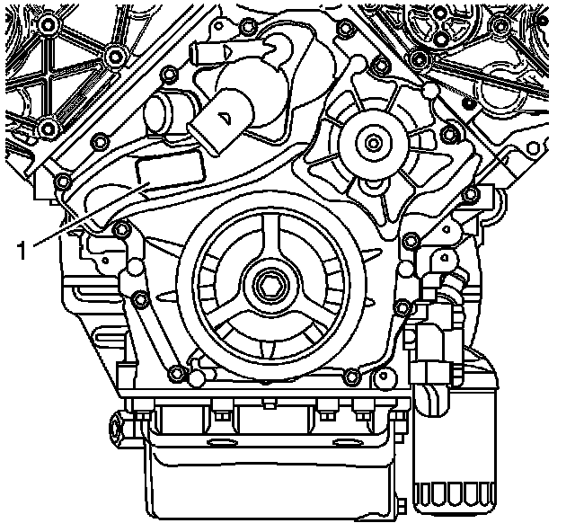
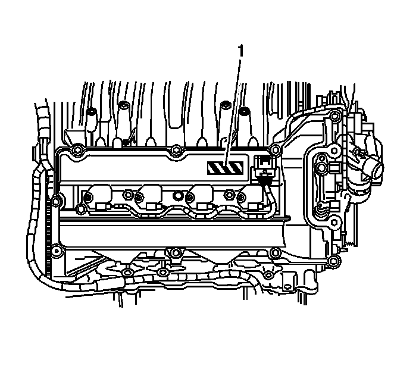

Engine: Application and ID
Engine Identification

The Vehicle Identification Number (VIN) Derivative is located on the right front side of the engine block (1) and is a nine digit number stamped or laser etched onto the engine at the vehicle assembly plant. If reading the identification number the following information can be obtained:
* The first digit identifies the vehicle division.
* The second digit is the model year.
* The third digit identifies the assembly plant.
* The fourth through ninth digits are the last six digits of the Vehicle Identification Number (VIN).
Engine Verification
The engine verification label is placed in two locations on the right side of the engine.

The engine front cover has an engine verification label (1).

The front of the right camshaft cover has a traceability label (1).